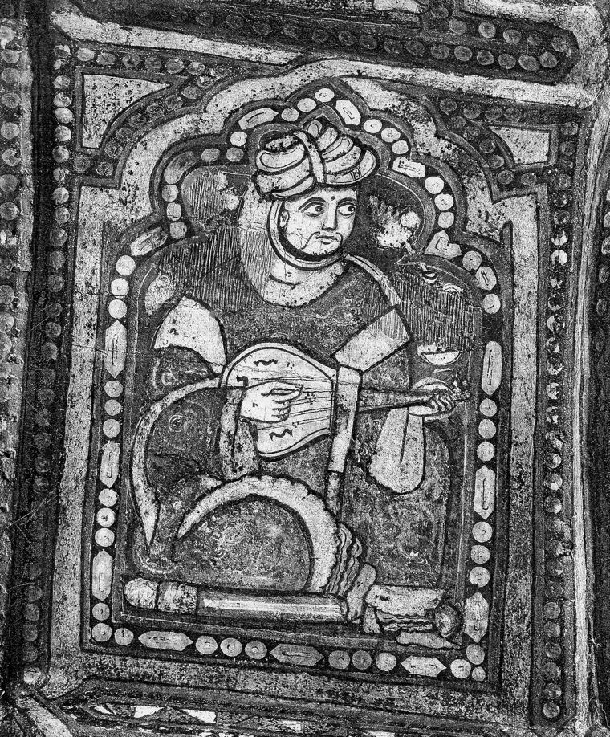

Der Diwan des Ibn Ḥamdīs · Siziliens Dichter im Exil
Zungen aus Feuer
Ibn Ḥamdīs wurde um 1056 in Syrakus geboren und starb im Exil, fern von der Insel, nach der er sich sein Leben lang sehnte. Er schrieb arabisch, in der Sprache der Fürsten, der Liebenden und der Verbannten.
Hier stehen seine Gedichte in freier deutscher Übertragung, nach dem italienischen Text von Celestino Schiaparelli, mit Anmerkungen zu Bildern, Anspielungen und Übersetzungsproblemen.

und der Pfau sein gesprenkeltes Gefieder.
Als wären dort die Mohnblumen roter Wein
und die Höfe vor den Häusern seine Becher.CCCLII · Trauer um den Verlust der Heimat Sizilien · zum Gedicht
Unsere Lieblingsgedichte
Eine subjektive Auswahl, die sich mit jedem neuen Fund verschieben kann.
denn Dein Herr ist stets der Allbarmherzige.CX · Vers 37 Die verborgene zweite EbeneWie viele dunkle Nächte, von denen du glaubtest,
sie hätten den Augen der Sehenden die Salbe der Finsternis gegeben,CCCV · Vers 6 Das einzige datierte GedichtAus dem Bronzerohr schoss eine brennende Flut,
das die Seelen der Barbaren austilgte.CXXXVIII · Vers 45 Reine BildkraftSchau ihn dir an. Ganz braun. Mit scharfem Schnabel, die Spitze wie aus grimmem Schwert geformt.CCIX · Vers 1 Der kühnste EinzelversAus ihr kam die rote Seele hervor,
aus mir floss die weiße.CCCVI · Vers 6 Beduinenlob und KriegsqasideEr treibt uns die Tränen ins Auge und salbt sie mit
Kollyrium des Lichts — obwohl es dunkle Nacht ist.CCLXIX · Vers 41 Smaragd und KristallDie Fesseln vieler Hufe sind geschmückt mit [grünem] Smaragd,
zerbrechen das gefrorene Kristall [der Felder] über die sie jagen.1XLIX · Vers 5
Alle Gedichte
Nach Gattung geordnet (Erläuterung der Gedichtformen). Ein Klick führt zum vollständigen Gedicht mit Kommentar.
 Qasiden und Qasidenfragmente9
Qasiden und Qasidenfragmente9
Die klassische Langform mit einem Reim und einem Versmaß: Erinnerung, Liebe, Reise und am Ende Lob oder Klage. Mehr zur Form
- CXXXVIIILob des Emirs ʿAlī ibn YaḥyāDu Glücklicher! Dir präsentieren sie eine großzügige Braut,
- CCXCIILob des Emirs ʿAlī ibn Yaḥyā zum RamadanAus Liebe zu Gott hast du gefastet - ein großzügiger, großmütiger Mann,
- CCCXIVLob des al-Manṣūr b. an-NāṣirZwischen dem Sternenglanz des Ruhms und des Aldebaran erhebt sich ein Palast,
- CCCXVIIÜber die eigene Dichtkunst (Auszug)Ein Lobgesang, verfasst mit eleganter Kunstfertigkeit,
- CCCXLVIIEr beschreibt einen Palast, gebaut von al-Manṣūr b. ʿAlnāsIm Regierungspalast hast Du deinen Versammlungssaal gebaut,
- CCCLVILob des Richters Abū-l-Ḥasan ʿAlī b. al-Qāsim b. ʿAšra (Fragment)Oh Qadi von scharfem, durchdringendem Geist, Fackel des rechten Lebens,
- CXEr rühmt sich in Erinnerung an vergangene TageMeine Seele hat sich ausgetobt in ihrer Jugend,
- CLVIIEr erinnert sich an Sizilien und SyrakusAus wichtigem Grund treiben wir die abgehärteten Kamele an,
- CCLXIXWüstenreise, Heimweh und SeekriegZur Weide der weißen Schwerter wird das Feld der Schlacht,
 Ghazal und Liebesdichtung9
Ghazal und Liebesdichtung9
Liebesdichtung, im Arabischen zunächst ein Thema und keine feste Form. Mehr zur Form
- IVLied über die LiebeSie kam mich zu besuchen, trotz der Furcht vor Wächtern,
- CCLXVIIIDie Wohnstatt der SelmaO Wohnstatt der Selma — würdest du mir den Gruß erwidern,
- CCCIIEr sang von der LiebeIhr Söhne des Krieges — die Söhne der Liebe unterscheiden sich nicht von Euch,
- CCCIVEr sang von der LiebeSchau sie dir an mit ihren schmachtenden Gazellen-Augen:
- CCCVEr sang von der LiebeIch wies der Kritiker Tadel von mir und setzte
- CCCVIEr sang von seiner jugendlichen LiebeDa war jene mit den Zöpfen, die nach Moschus dufteten,
- CCCXEr sang von der LiebeDu lässt mich keinen Frieden finden zwischen zwei Elementen: dem Feuer
- CCCLVFragmentMit lockiger Stirn bestürmt dich sein spöttischer Blick.
- CCCLVIIFragmentSie steigert die Schwärze des Auges, indem sie es mit Kollyrium benetzt.
 Weindichtung2
Weindichtung2
Weindichtung, von Abū Nuwās als eigene Gattung geprägt. Mehr zur Form
- CXIXWeinbecher im strömenden KreislaufSieh den künstlichen Fluss, der den Durst fröhlicher Zecher stillt,
- CCCLIIIÜber frischen WeinSchau auf den frischen Wein: wie leere Perlen
Natur- und Gegenstandsbeschreibung5
Beschreibungsdichtung: Seerosen, Meer, Anemonen, Wolke. Mehr zur Form
- IIILied über die SeerosenTrink auf dem Teich, grün von Seerosen,
- VIEr beschreibt das MeerIch sehe, wie Du die stürmische, unermessliche See durchsegelst,
- CXVIIÜber AnemonenIch sah die Schönheit der Gärten, als die Tränen ihrer
- CCCVIIEr beschreibt die SeeroseDie gepflückte Seerose
- CCCVIIIEr beschreibt eine WolkeStändig flammen Blitze auf
 Jagd- und Kriegsdichtung2
Jagd- und Kriegsdichtung2
Jagd- und Kriegsdichtung: das Tier, die Waffe, der Jäger, der Kampf. Mehr zur Form
- CCIXEr beschreibt einen Falken, der Enten jagtSchau ihn dir an. Ganz braun. Mit scharfem Schnabel, die Spitze wie aus …
- XLIXEin Ausfall ins Land der RūmSchau auf ihre Tränen. Könnte man sie kosten, schmeckten sie süß
Weisheitsdichtung1
Weisheitsspruch und Sentenz. Mehr zur Form
 Kurze Heimat- und Verlustgedichte3
Kurze Heimat- und Verlustgedichte3
Kurze Stücke der Heimatklage und des Verlusts. Mehr zur Form